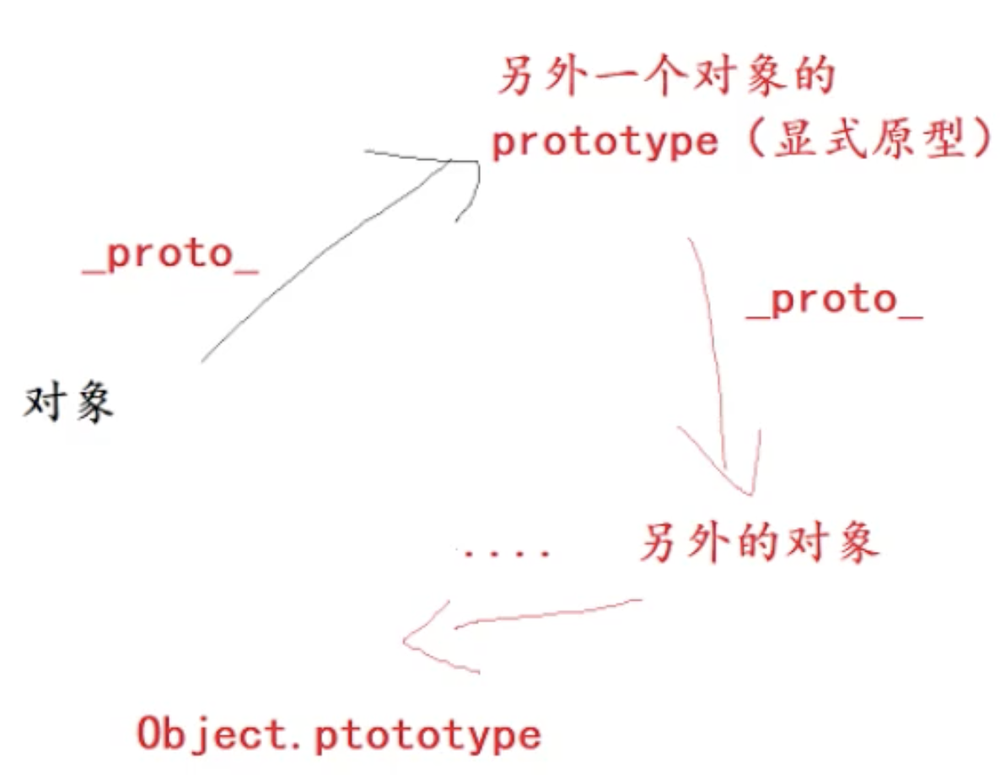
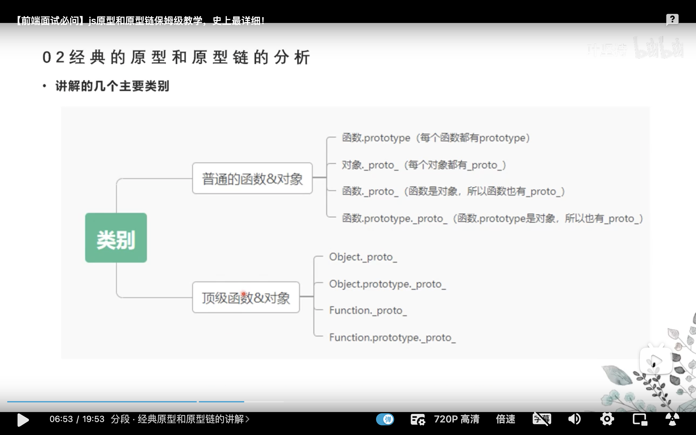
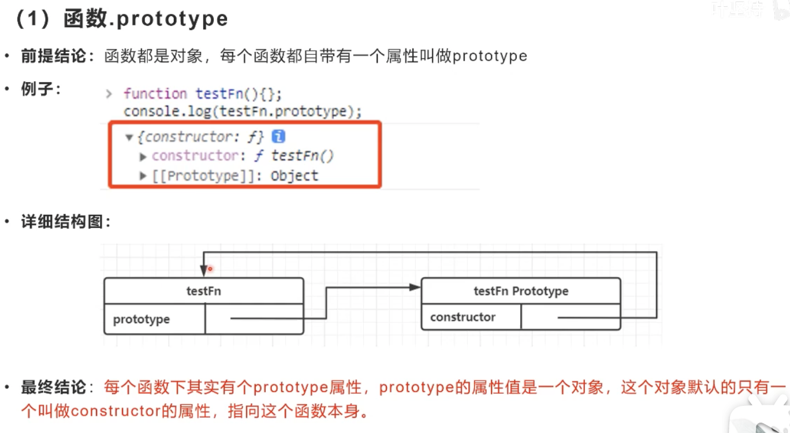
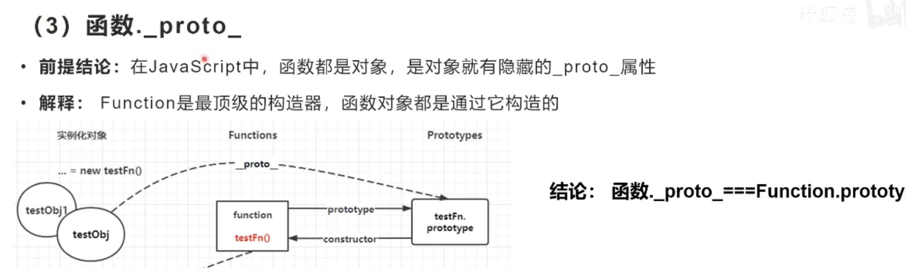

1.函数和对象的关系
1.函数是对象，对象都是通过函数创建的
2.原型的类别：
1.显式原型：prototype,是每个函数独有的属性
2.隐式原型：_proto_,每个对象都有的属性
3.原型和原型链
1.原型：一个函数可以看成一个类，原型是所有类都有的一个属性，原型的作用就是给给这个类的对象都添加一个统一的方法
2.原型链：每个对象都有一个_proto_,这个_proto_又会指向它的prototype原型对象，它的prototype原型对象又会有一个_proto_指向它的prototype原型对象，直到找到最终的顶级Object的prototype，这样的查询路径我们称之为原型链
4.js里最顶层的两个概念
Function是最顶层的构造器（它构造了系统中的所有的对象，包括用户自定义对象，系统内置对象，甚至包括它自己）
1.自定义对象:自己创建了一个函数，用这个函数new出来的就是自定义对象
2.系统内置对象：例如Array，不用我们自己去写
Object是最顶层的对象:所有的对象都继承Object的原型。Object也是被Function构造出来的
5.instanceof
常见的不够准确的描述：判断一个对象是否是某个构造函数的实例
正确描述：沿着Object的原型链查找是否存在对象f.prototype,如果存在返回true，若查到原型链的终点Object.prototype还是没有找到就返回false

经典原型和原型链分析

(1)函数.prototype
函数都是对象，每个函数都有自带属性prototype
每个函数下都有prototype属性，prototype的属性值是一个对象，prototype又只有一个constructor属性，指向这个函数本身

(2)对象._proto_
结论：每个对象都有隐式属性叫_proto_
[[prototype]]是对象的一个内部属性，它可以看作是对象的_proto_属性
_proto_就是构造该对象的函数的prototype的属性
testObject._proto_=testFn.prototype
(3)函数._proto_
在javascript中，函数都是对象，对象就都会有_proto_
解释：Function是最顶级的构造器，函数对象都是通过它构造的
结论：函数._proto_===Function.prototype

(4)函数.prototype._proto_
函数.prototype本质上是一个空对象，由new Object()创建的。
结论：函数.prototype._proto_=Object.prototype
(谁创建了这个对象 这个对象的隐式原型就指向 创建它的函数的显示原型)
(5)Object._proto_
对象是由函数构造的，所以Object._proto_==Function.prototype